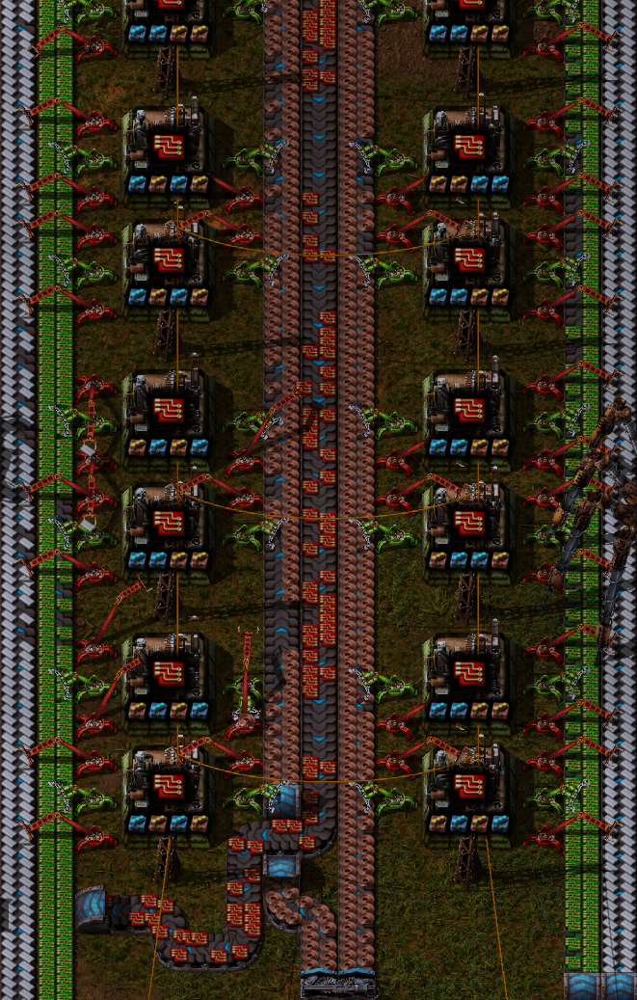
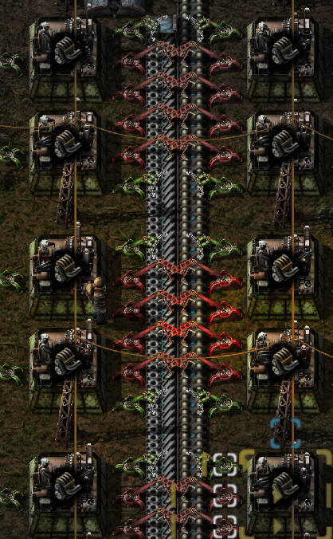
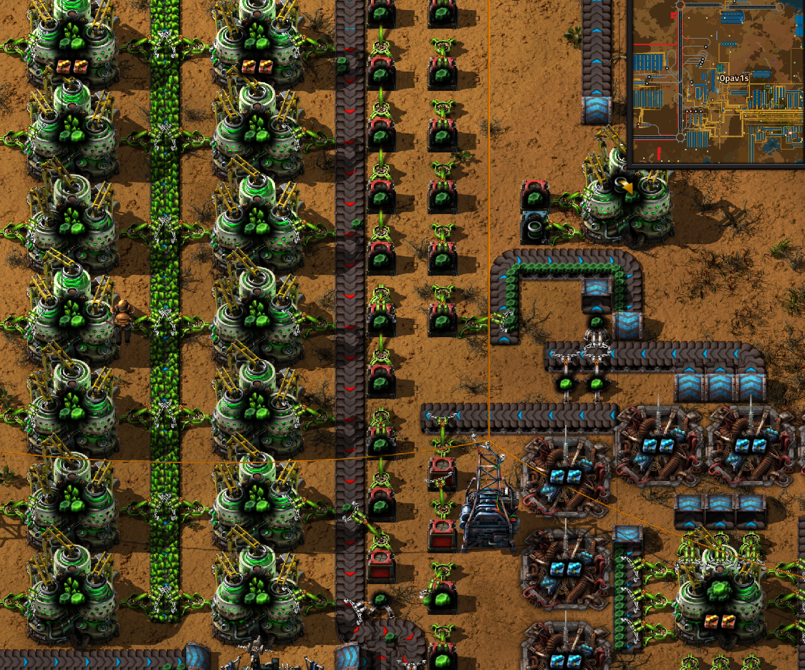

Chemický vědecký balíček
Podle jména jde poznat že se začínáme zabívat i ropou což v této fázi není ještě tak složité. Tento balíček odemyká cestu k lepším pecím, elektrické rozvodně, jaderné enrgii a laserové věži, je potřeba k výzkumům pro odlet rakety. K výrobě budeme potřebovat síru, motor a pokročilý elektrický obvod červené barvy.
Ukázka výroby surovin a výroby samotného balíčku
Obrázek ukazuje chemičky na výrobu síry a kyseliny sírové
{kind=link}
Obrázek ukazuje výrobnu plastu z pokročilé hry
{kind=link}
Obrázek ukazuje výrobu pokročilých obvodů z elektrických obvodů, plastu a měděných drátů v pozdější fázi hry
{kind=link}
Obrázek ukazuje výrobu motoů v pozdější fázi hry dá se použít i v moment bez pokročilých výzkumů
{kind=link}
Obrázek ukazuje výrobu chemického balíčku bez pokročilých výzkumů

Obrázek ukazuje výzkumný strom chemického balíčku
{kind=link}
Co vše získáte jeho výzkumem
Obrázek ukazuje odstředivky které rozdělují uranovou rudu na uran 238 a uran 235, z uranu 235 se později dá vyrobit palivo do atomového reaktoru a atomová zbraň
{kind=link}
Obrázek ukazuje atomý reaktor s 16 jádry produkující zhruba 2 gigawaty energie

Obrázek ukazuje rizvodnu sož je elktrický sloup s největší oblastí pokrytí
{kind=link}
Obrázek ukazuje elektrické pece do kterých stačí jenom vložit rudu a nemusíte se starat o palivo dokud máte energii